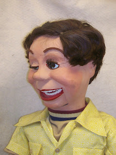
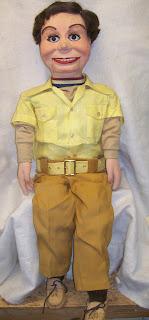
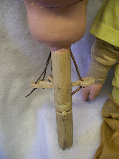
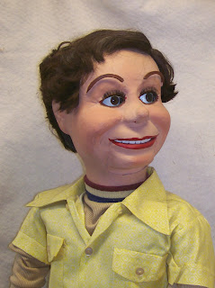

Howie Olson Figure
7/6/2012
From Dennis Chapman:
During the 1950's I was a student (9 yrs old) of Howard Olson in Houston, Texas. He was the person responsible for getting me enrolled in the IBV and his teaching and encouragement provided me with many years of being able to entertain as a ventriloquist.....such fond memories.
I have not practiced Ventriloquism for some time but I really enjoyed it when I did and I no longer have the figure. He was damaged and lost in one of the many Hurricanes in Texas. It might be nice getting back into it at my age (67) because it is something unique and always entertaining. When I first started a friend made a figure for me and then later purchased a more professional figure. I will attach a newspaper clipping (about me) that you might find interesting.
{kind=link}
During the 1950's I was a student (9 yrs old) of Howard Olson in Houston, Texas. He was the person responsible for getting me enrolled in the IBV and his teaching and encouragement provided me with many years of being able to entertain as a ventriloquist.....such fond memories.
I have not practiced Ventriloquism for some time but I really enjoyed it when I did and I no longer have the figure. He was damaged and lost in one of the many Hurricanes in Texas. It might be nice getting back into it at my age (67) because it is something unique and always entertaining. When I first started a friend made a figure for me and then later purchased a more professional figure. I will attach a newspaper clipping (about me) that you might find interesting.
* * * * *
From Mr. D: Howie was a good friend. He often wrote columns for Newsy Vents. and in the early 1970s he built several figures for us to sell through Maher Studios. In fact, I still have a custom figure Howie built for me during that era. Howie intended it to be in the likeness of Fred Maher's Skinny Dugan built by the McElroy Brothers, but I never offered it as such. I did not consider the likeness true enough. But it is one of Howie Olson's larger and more rare creations, that's for certain, and for that reason alone I kept it on display rather than selling it. However, when we moved on 1996, I no longer had room to display my collection and all went into storage. I would be willing to sell it now.
From Mr. D: Howie was a good friend. He often wrote columns for Newsy Vents. and in the early 1970s he built several figures for us to sell through Maher Studios. In fact, I still have a custom figure Howie built for me during that era. Howie intended it to be in the likeness of Fred Maher's Skinny Dugan built by the McElroy Brothers, but I never offered it as such. I did not consider the likeness true enough. But it is one of Howie Olson's larger and more rare creations, that's for certain, and for that reason alone I kept it on display rather than selling it. However, when we moved on 1996, I no longer had room to display my collection and all went into storage. I would be willing to sell it now.
 |
| Original Paint, wig, clothes |
{kind=link}
 |
| 40" tall Never used. |
{kind=link}
 |
| Typical Howie Olson controls |
{kind=link}
 |
| Side-to-side self-centering eyes Individual eye winkers Raising eyebrows |
{kind=link}